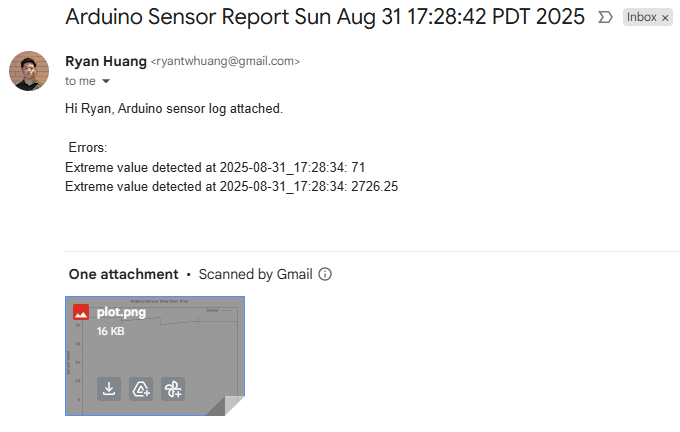
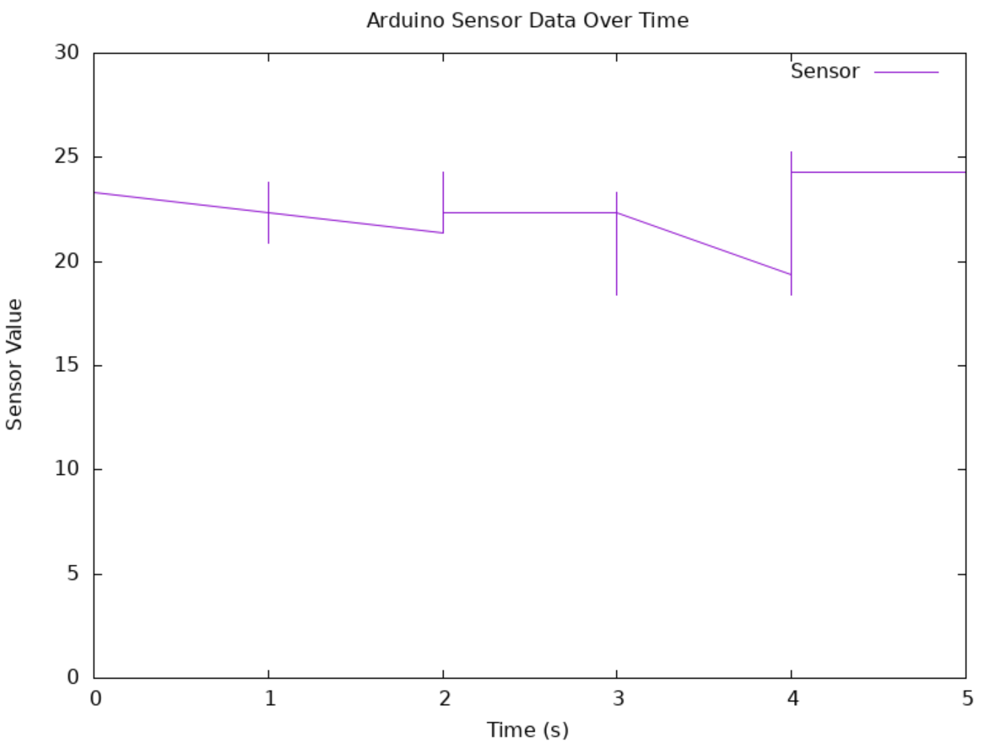

Automated Sensor Logger & Reporter



Date: August 2025
Problem: Manual sensor logging during QA is time-consuming and error-prone. Since many embedded systems rely on Linux for automated testing, I designed a system to streamline Arduino sensor data acquisition, anomaly detection, and reporting. This project also gave me hands-on experience with shell scripting and building end-to-end automation pipelines in a Linux environment.
Solution: I built a Bash-based automation pipeline that collected sensor data from an Arduino, logged it to CSV with timestamps, generated plots, flagged anomalies, and emailed reports containing logs and visualizations. This involved integrating Ubuntu on WSL, serial data handling, and automated report generation using Linux utilities.
Impact: The main challenge was that WSL does not allow direct access to hardware COM ports. To solve this, I set up a TCP bridge (com2tcp) to forward Arduino serial data into Linux, validated the stream using netcat, and resolved parsing/permission issues. Through this project, I strengthened my skills in Linux automation, serial communication, and end-to-end QA workflow design.
Features: Linux OS, Bash, TCP/IP Protocol, Arduino, C/C++, Temperature Sensor